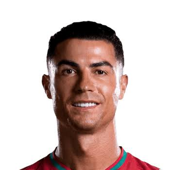
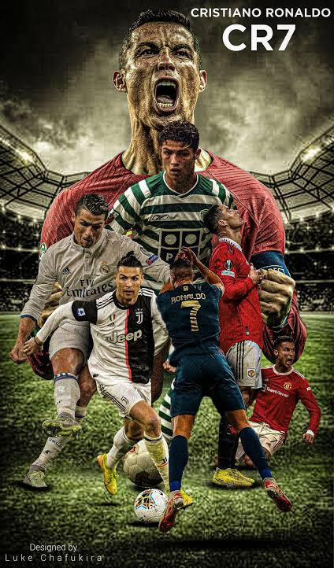

Sporting CP (2002–2003)
Ronaldo began his professional career at Sporting CP in Portugal, where his outstanding performances attracted the attention of Manchester United.
Welcome to the ultimate CR7 fan website. Explore the life, career, records, trophies, and unforgettable moments of Cristiano Ronaldo, one of the greatest football players of all time.

Cristiano Ronaldo dos Santos Aveiro was born on February 5, 1985, in Madeira, Portugal. He is considered one of the greatest football players in history because of his dedication, discipline, talent, and incredible goal-scoring ability.
Throughout his career, Ronaldo has inspired millions of people around the world. His passion for football, strong work ethic, leadership, and determination have helped him achieve success at every club he has played for.
He has won numerous league titles, UEFA Champions League trophies, Ballon d'Or awards, and international competitions with Portugal, becoming a global sports icon.

Ronaldo began his professional career at Sporting CP in Portugal, where his outstanding performances attracted the attention of Manchester United.
Under Sir Alex Ferguson, Ronaldo developed into one of the best players in the world. He won three Premier League titles, one UEFA Champions League trophy, and his first Ballon d'Or.
Ronaldo became Real Madrid's all-time leading scorer, winning four Champions League titles, two La Liga titles, and multiple Ballon d'Or awards while breaking countless records.
Ronaldo continued his success in Italy by winning Serie A titles and becoming one of the league's top scorers.
Ronaldo joined Al-Nassr, helping grow football's popularity in Saudi Arabia while continuing to score goals and inspire fans.
Ronaldo is Portugal's captain and all-time leading scorer. He won UEFA Euro 2016 and the UEFA Nations League, becoming one of the greatest international players in football history.
| Achievement | Number |
|---|---|
| Ballon d'Or | 5 |
| UEFA Champions League | 5 |
| European Championship (EURO) | 1 |
| UEFA Nations League | 2 |
| Career Goals | 900+ |
| International Goals | 130+ |
Have a question, suggestion, or want to share your thoughts about CR7? Send us a message!